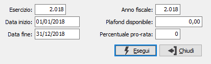
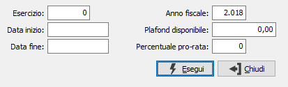
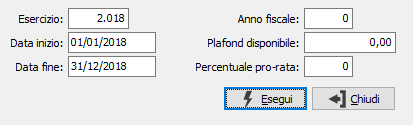
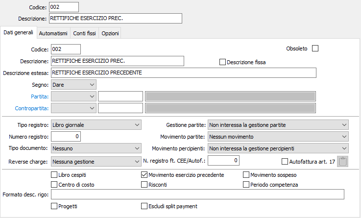

Introduzione
OS1 è strutturato in modo di poter contenere più esercizi “in linea”. Pertanto nella stessa azienda convivono i dati relativi a più esercizi, ed è comunque possibile operare sull’esercizio precedente non ancora chiuso e sul nuovo appena aperto avendo a disposizione tutte le informazioni. Occorre ovviamente effettuare alcune operazioni per rendere operativo il “doppio esercizio”
Le operazioni di fine esercizio si suddividono in due parti ben distinte.
La prima parte, che consiste nella “Generazione del nuovo esercizio”, viene effettuata nell’immediata prossimità dell’inizio del nuovo esercizio, serve esclusivamente ad iniziare il lavoro amministrativo per il nuovo anno e non ha nulla a che vedere con le chiusure contabili, fiscali e inventariali che verranno effettuate in tempi successivi, generalmente dopo l’approvazione dei bilanci.
La seconda parte, che consiste nella “Chiusura / riapertura dell’esercizio”, viene invece effettuata tre/quattro mesi dopo, appunto dopo l’approvazione dei bilanci.
Nel lasso di tempo intercorrente fra la “Generazione del nuovo esercizio” e la “Chiusura/riapertura dell’esercizio” l’utente può effettuare scritture contabili con data di registrazione e competenza nel nuovo esercizio; con data di registrazione e competenza dell’esercizio precedente. Può inoltre effettuare scritture contabili “di rettifica” con data di registrazione nel nuovo esercizio ma con competenza dell’esercizio precedente, utilizzando apposite causali contabili contrassegnate dalla spunta nel check box “Movimento esercizio precedente”. La caratteristica di tali operazioni (che non possono comunque riferirsi a movimenti Iva) consiste nel fatto che, pur venendo stampate sul giornale di contabilità del nuovo anno, concorrono alla formazione del bilancio e vengono stampate sulle schede dell’anno precedente.
Esercizio fiscale e esercizio contabile
Prima di procedere con l’illustrazione dei programmi, occorre dare significato a due termini usati da OS1: Esercizio fiscale e Esercizio contabile. Per Esercizio Fiscale si intende quell’insieme di adempimenti che, per tutti gli utenti, corrisponde all’anno solare, ovvero dal primo gennaio al 31 dicembre: la gestione Iva, che va appunto dal primo gennaio al 31 dicembre, la gestione percipienti mod. 770, che pure va dal primo gennaio al 31 dicembre.
Per Esercizio Contabile si intende invece l’anno contabile che si conclude con il bilancio di chiusura per dare successivamente luogo alla dichiarazione dei redditi, e la cui durata, non necessariamente coincidente con l’anno solare, varia da utente ad utente in funzione di quanto previsto dallo statuto.
Per la maggior parte degli utenti l’esercizio fiscale e l’esercizio contabile coincidono: sarà quindi sufficiente, in prossimità del 1° gennaio, effettuare una sola volta la generazione del nuovo esercizio aprendo contemporaneamente i “protocolli Iva” ed i “protocolli contabili” del nuovo anno.
Le Società che prevedono invece l’esercizio contabile non coincidente con l’anno solare dovranno procedere alla generazione del nuovo esercizio in due tempi: in prossimità del 1° gennaio si effettuerà l’apertura del solo esercizio fiscale, inizializzando i protocolli Iva del nuovo anno; in prossimità dell’inizio del nuovo esercizio si effettuerà l’apertura del solo esercizio contabile, inizializzando i protocolli contabili.
Le note di questo capitolo si articolano sui seguenti paragrafi:
L’apertura del nuovo esercizio è un programma di Configurazione. Pertanto l’accesso al programma è riservato al responsabile del sistema.
Tutti i programmi di questo capitolo sono raggruppati sotto la scelta Operazioni di fine esercizio della procedura Contabilità:
Se presente il modulo di contabilità semplificata saranno presenti anche le seguenti scelte:
Generazione del nuovo esercizio
1. Aziende con esercizio fiscale ed esercizio contabile coincidenti

NUMERO ESERCIZIO CONTABILE: Il campo contiene il numero dell'esercizio contabile da aprire: inserire l’anno nuovo (es: 2002).
DATA INIZIO ESERCIZIO: È la data di inizio dell'esercizio contabile da aprire. In automatico viene proposto il giorno successivo alla data di chiusura dell'esercizio precedente, che, per questi utenti, è il 1° gennaio. Confermare la data che viene proposta.
DATA FINE ESERCIZIO: È la data di fine dell'esercizio contabile da aprire. Viene proposta in automatico la data corrispondente a 12 mesi dopo la data di inizio che, per questi utenti è il 31 dicembre. Se non esistono controindicazioni particolari (esercizi di durata superiore o inferiore al 12 mesi), confermare la data proposta.
ANNO FISCALE: Il campo dovrebbe contenere il numero dell’esercizio fiscale. Quando le date di inizio e fine esercizio contabile precedentemente inserite o confermate, vanno dal 1° gennaio al 31 dicembre, il numero di anno fiscale corrisponde al numero di esercizio.
PLAFOND DISPONIBILE: È l'importo disponibile per il nuovo anno per acquisti in esenzione effettuati in base all'art. 8 D.P.R. 663/72 riportato sul quadro A del modello Iva 99bis. Interessa solo gli esportatori abituali, che devono inserire l’importo per gestire correttamente il plafond del nuovo anno.
PERCENTUALE PRO-RATA: È la percentuale di pro-rata da applicare al totale Iva acquisti.
Confermando l’apertura, vengono aperti i protocolli di tutte le procedure amministrative attive: contabilità, registri Iva, ritenute d’acconto, cespiti, contabilità analitica, ecc.
2. Aziende con esercizio fiscale diverso dall’esercizio contabile.
a) Apertura dell’esercizio fiscale (IVA)
Nei primi giorni di gennaio, alla ripresa del lavoro, accedere al programma di Apertura esercizio per creare i protocolli Iva.

NUMERO ESERCIZIO CONTABILE: confermare a vuoto sul campo per procedere all'apertura del solo anno fiscale (Iva), dal momento che l’esercizio contabile corrente risulta ancora attivo all’inizio del nuovo anno solare. Vengono automaticamente saltate le richieste delle date di inizio e fine esercizio contabile.
ANNO FISCALE: Inserire il numero indicativo dell’anno (es: 2002) per aprire i protocolli Iva per il nuovo anno.
PLAFOND DISPONIBILE: È l'importo disponibile per il nuovo anno per acquisti in esenzione effettuati in base all'art. 8 D.P.R. 663/72 riportato sul quadro A del modello Iva 99bis. Interessa solo gli esportatori abituali, che devono inserire l’importo per gestire correttamente il plafond del nuovo anno.
PERCENTUALE PRO-RATA: È la percentuale di pro-rata da applicare al totale Iva acquisti.
Dopo l’apertura dell’anno fiscale, la numerazione della prima nota contabile prosegue mentre i protocolli Iva vendite, Iva acquisti ed Iva corrispettivi ripartono da 1.
b) Apertura dell’esercizio contabile (Contabilità generale)
Quando si devono effettuare le prime scritture del nuovo esercizio contabile (es: 1 luglio), accedere nuovamente al programma “Apertura nuovo esercizio” per aprire i protocolli contabili:

NUMERO ESERCIZIO CONTABILE: Il campo contiene il numero dell'esercizio contabile da aprire: inserire l’anno nuovo (es: 2002).
DATA INIZIO ESERCIZIO: È la data di inizio dell'esercizio contabile da aprire. In automatico viene proposto il giorno successivo alla data di chiusura dell'esercizio precedente. Confermare la data che viene proposta accertandosi che corrisponda a quella di effettivo inizio.
DATA FINE ESERCIZIO: È la data di fine dell'esercizio contabile da aprire. Viene proposta in automatico la data corrispondente a 12 mesi dopo la data di inizio. Se non esistono controindicazioni particolari (esercizi di durata superiore o inferiore al 12 mesi), confermare la data proposta.
PERCENTUALE PRO-RATA: È la percentuale di pro-rata da applicare al totale Iva acquisti.
Poiché l’esercizio fiscale (Iva) era già stato aperto precedentemente, il programma passa direttamente alla richiesta di conferma senza fermarsi sugli ulteriori campi. Dopo l’apertura, la numerazione della prima nota contabile riparte da 1, mentre i protocolli Iva vendite, Iva acquisti ed Iva corrispettivi proseguono.
Esiste spesso l’abitudine di effettuare la registrazione delle scritture di rettifica dell’esercizio precedente con data 31 dicembre, anche se si riferiscono a operazioni che si sono concretizzate dopo tale data. È evidente a chiunque che, ad esempio, l’importo degli interessi attivi o passivi bancari, dei ratei e dei risconti, degli ammortamenti e degli accantonamenti diventano noti in data successiva al 31 dicembre. A norma di Codice Civile, tali scritture dovrebbero essere effettuate con data di registrazione contestuale all’effettivo momento delle rilevazione e non con data precedente. Ovviamente gli importi di queste operazioni dovrebbero tuttavia aggregarsi a quelli dell’esercizio cui si riferiscono.
OS1 gestisce questa possibilità. Occorre creare una apposita causale contabile, da utilizzare esclusivamente per questo tipo di operazioni, caratterizzata dalla presenza della spunta nel campo “Movimento relativo esercizio precedente”.

Naturalmente questa causale è valida solo per le operazioni di contabilità generale, poiché nessun documento valido ai fini Iva può essere registrato nell’esercizio corrente con competenza dell'esercizio precedente.
Tutte le operazioni contraddistinte da questa causale vengono stampate sul giornale dell’anno in corso, sulla base della data di registrazione. Viceversa, aggiornano i valori progressivi dell’anno precedente.
In Analisi sottoconti a video queste operazioni non vengono visualizzate fra le operazioni del corrente esercizio, ma appariranno come ultime (a causa della data successiva al 31 dicembre o, per chi ha l’esercizio contabile diverso, alla data di chiusura) fra le operazioni dell’esercizio precedente.
In Analisi sottoconti a video e in Stampa situazione sottoconti esiste una apposita richiesta nella maschera di input: il valore del flag “scritture di rettifica” determina la stampa o l’esclusione di queste operazioni dal tabulato e dal relativi totali, come previsto dall’help a video.
Analogo trattamento prevedono tutti i programmi di elaborazione e stampa dei bilanci non riclassificati e riclassificati, con le apposite richieste “mov. rettifica” e “fino a data” che consentono di ottenere bilanci secondo la duplice funzione di totalizzazione delle registrazioni effettuate entro due date, oppure bilancio secondo la competenza.
Durante il corso dell’anno fiscale, la registrazione di fatture e note di credito determina il duplice aggiornamento dei “progressivi Iva per aliquota” e dei “progressivi Iva” di clienti e fornitori.
Ciò consente di ottenere, dopo la registrazione delle ultime fatture e la stampa definitiva dei registri Iva e delle liquidazioni periodiche, alcuni prospetti riepilogativi utili per il controllo delle quadrature Iva e per la compilazione della dichiarazione annuale Iva.
Chiusure / riaperture d’esercizio
Dopo aver completato tutte le scritture di rettifica dell’esercizio trascorso, è possibile procedere alla chiusura dell’esercizio con la seguente sequenza